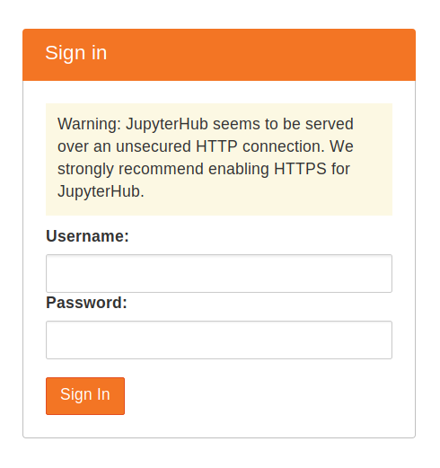

Installing on your own server¶
Note
You should use this if your cloud provider does not already have a direct tutorial, or if you have experience setting up servers.
Goal¶
By the end of this tutorial, you should have a JupyterHub with some admin users and a user environment with packages you want installed running on a server you have access to.
Pre-requisites¶
- Some familiarity with the command line.
- A server running Ubuntu 18.04 where you have root access.
- Ability to
sshinto the server & run commands from the prompt. - A public IP where the server can be accessed from the internet.
Step 1: Installing The Littlest JupyterHub¶
Using a terminal program, SSH into your server. This should give you a prompt where you can type commands.
Copy the text below, and paste it into the terminal. Replace
<admin-user-name>with the name of the first admin user for this JupyterHub. Choose any name you like (don’t forget to replace the brackets!). This admin user can log in after the JupyterHub is set up, and can configure it to their needs. Remember to add your username!curl https://raw.githubusercontent.com/jupyterhub/the-littlest-jupyterhub/master/bootstrap/bootstrap.py | sudo python3 - --admin <admin-user-name>Note
See What does the installer do? if you want to understand exactly what the installer is doing. Customizing the Installer documents other options that can be passed to the installer.
Press
Enterto start the installation process. This will take 5-10 minutes, and will say ‘Done!’ when the installation process is complete.Copy the Public IP of your server, and try accessing http://<public-ip> from your browser. If everything went well, this should give you a JupyterHub login page.
Login using the admin user name you used in step 2. You can choose any password that you wish. Use a strong password & note it down somewhere, since this will be the password for the admin user account from now on.
Congratulations, you have a running working JupyterHub!
Step 2: Adding more users¶
Most administration & configuration of the JupyterHub can be done from the web UI directly. Let’s add a few users who can log in!
Open the Control Panel by clicking the control panel button on the top right of your JupyterHub.

In the control panel, open the Admin link in the top left.

This opens up the JupyterHub admin page, where you can add / delete users, start / stop peoples’ servers and see who is online.
Click the Add Users button.
A Add Users dialog box opens up.
Type the names of users you want to add to this JupyterHub in the dialog box, one per line.

You can tick the Admin checkbox if you want to give admin rights to all these users too.
Click the Add Users button in the dialog box. Your users are now added to the JupyterHub! When they log in for the first time, they can set their password - and use it to log in again in the future.
Congratulations, you now have a multi user JupyterHub that you can add arbitrary users to!
Step 3: Install conda / pip packages for all users¶
The User Environment is a conda environment that is shared by all users
in the JupyterHub. Libraries installed in this environment are immediately
available to all users. Admin users can install packages in this environment
with sudo -E.
Log in as an admin user and open a Terminal in your Jupyter Notebook.

Install gdal from conda-forge.
sudo -E conda install -c conda-forge gdal
The
sudo -Eis very important!Install
therewithpipsudo -E pip install there
The packages gdal and there are now available to all users in JupyterHub.
If a user already had a python notebook running, they have to restart their notebook’s
kernel to make the new libraries available.
See Install conda, pip or apt packages for more information.